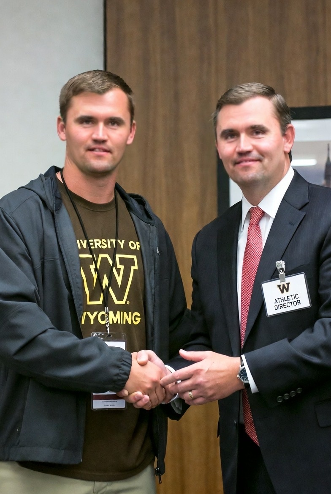
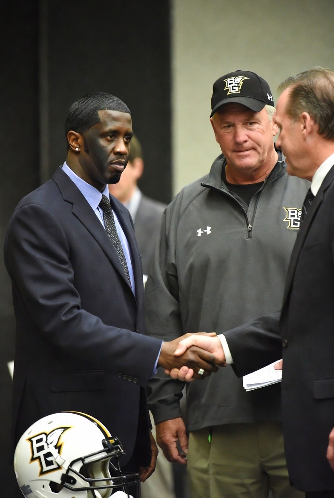

CFB
News
From Around The League
Kansas State Defeats Iowa State 47-28 in Dublin Opener
Click to read full article →
Recent Articles
◀
▶
Charlie Kirk's Wyoming Defeats SDSU 27-16 in Season Opener
January 29, 2026
UNLV Falls to Colorado State in 45-7 Beatdown
January 29, 2026
Sean Combs and Drew Pyne Lead Bowling Green Over Liberty 34-17
January 29, 2026
#4 Georgia Skids By Charlotte 43-28
January 29, 2026
Mississippi State's Jacob Clark Throws for 400+ Yards Despite Loss
January 29, 2026

Charlie Kirk Hired as Head Coach of Wyoming Football
January 28, 2026

Sean "Diddy" Combs Hired as Head Coach of Bowling Green
January 28, 2026
Mrs. Frank Hired as Head Coach of Colorado State
January 28, 2026
View All Articles →